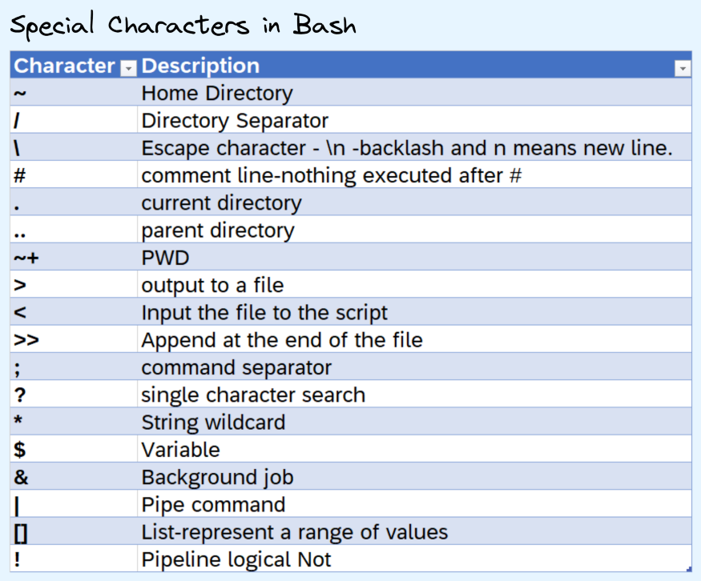
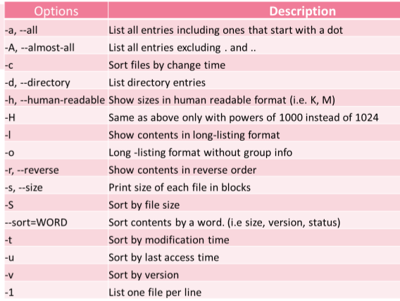

CLI
Misc
- Resources
ctrl-rshell command history search- McFly - intelligent command history search engine that takes into account your working directory and the context of recently executed commands. McFly’s suggestions are prioritized in real time with a small neural network
- Path to a folder that’s above root folder:
- 1 level up:
../desired-folder - 2 levels up:
../../desired-folder
- 1 level up:
- Debian vs. Ubuntu (from ChatGPT)
- Stability vs. Freshness:
Debian: Debian is known for its stability and reliability. It has a rigorous testing process and a conservative approach to updates, which makes it suitable for servers and systems where stability is crucial.
Ubuntu: Ubuntu is based on Debian but tends to be more up-to-date with software packages. It follows a time-based release cycle, with regular releases every six months. This can be appealing if you want access to the latest features and software.
- Package Management:
Debian: Debian uses the Debian Package Management System (dpkg) and Advanced Package Tool (APT) for package management. It has a vast repository of software packages.
Ubuntu: Ubuntu also uses dpkg and APT but adds its own software management tools like Snap and Ubuntu Software Center. This can make software installation more user-friendly.
- Community and Support:
Debian: Debian has a large and dedicated community, and it’s known for its strong commitment to free and open-source software principles. It has a stable support structure, but community support may not be as user-friendly as Ubuntu’s.
Ubuntu: Ubuntu has a large and active community, and it offers both free and paid support options. The Ubuntu community is known for its user-friendliness and helpful forums, making it a good choice for beginners.
- Variants and Flavors:
Debian: Debian offers different flavors, known as “Debian spins,” catering to various needs, such as Debian Stable, Debian Testing, and Debian Unstable. These variants differ in terms of software stability and freshness.
Ubuntu: Ubuntu has several official flavors (e.g., Ubuntu Desktop, Ubuntu Server, Kubuntu, Xubuntu) that come with different desktop environments. This variety allows users to choose an environment that suits their preferences.
- Licensing:
Debian: Debian has a strict commitment to free and open-source software, prioritizing software that adheres to its Free Software Guidelines.
Ubuntu: While Ubuntu also includes mostly free and open-source software, it may include some proprietary drivers and software by default, which can be a concern for users who prioritize a completely open-source system.
- Performance (Google Search AI)
- Debian is considered lightweight and much faster than Ubuntu. It comes with few pre-installed software.
- Hardware (Google Search AI)
- Debian works well on older hardware. Debian still offers a 32-bit version of the distro, while Ubuntu no longer offers a 32-bit version.
- Stability vs. Freshness:
R
Make an R script pipeable (From link)
parallel "echo 'zipping bin {}'; cat chunked/*_bin_{}_*.csv | ./upload_as_rds.R '$S3_DEST'/chr_'$DESIRED_CHR'_bin_{}.rds"#!/usr/bin/env Rscript library(readr) library(aws.s3) # Read first command line argument data_destination <- commandArgs(trailingOnly = TRUE)[1] data_cols <- list(SNP_Name = 'c', ...) s3saveRDS( read_csv( file("stdin"), col_names = names(data_cols), col_types = data_cols ), object = data_destination )- By passing
readr::read_csvthe function,file("stdin"), it loads the data piped to the R script into a dataframe, which then gets written as an .rds file directly to s3 using {aws.s3}.
- By passing
Killing a process
system("taskkill /im java.exe /f", intern=FALSE, ignore.stdout=FALSE)Starting a process in the background
# start MLflow server sys::exec_background("mlflow server")Delete an opened file in the same R session
You **MUST** unlink it before any kind of manipulation of object
- I think this works because readr loads files lazily by default
Example:
wisc_csv_filename <- "COVID-19_Historical_Data_by_County.csv" download_location <- file.path(Sys.getenv("USERPROFILE"), "Downloads") wisc_file_path <- file.path(download_location, wisc_csv_filename) wisc_tests_new <- readr::read_csv(wisc_file_path) # key part, must unlink before any kind of code interaction # supposedly need recursive = TRUE for Windows, but I didn't need it # Throws an error (hence safely) but still works safe_unlink <- purrr::safely(unlink) safe_unlink(wisc_tests_new) # manipulate obj wisc_tests_clean <- wisc_tests_new %>% janitor::clean_names() %>% select(date, geo, county = name, negative, positive) %>% filter(geo == "County") %>% mutate(date = lubridate::as_date(date)) %>% select(-geo) # clean-up fs::file_delete(wisc_file_path)
Find out which process is locking or using a file
- Open Resource Monitor, which can be found
- By searching for Resource Monitor or resmon.exe in the start menu, or
- As a button on the Performance tab in your Task Manager
- Go to the CPU tab
- Use the search field in the Associated Handles section
- type the name of file in the search field and it’ll search automatically
- 35548
- Open Resource Monitor, which can be found
AWK
{kind=link}
Misc
- Resources
Print first few rows of columns 1 and 2
awk -F, '{print $1,$2}' adult_t.csv|headFilter lines where no of hours/ week (13th column) > 98
awk -F, ‘$13 > 98’ adult_t.csv|headFilter lines with “Doctorate” and print first 3 columns
awk '/Doctorate/{print $1, $2, $3}' adult_t.csvRandom sample 8% of the total lines from a .csv (keeps header)
'BEGIN {srand()} !/^$/ {if(rand()<=0.08||FNR==1) print > "rand.samp.csv"}' big_fn.csvDecompresses, chunks, sorts, and writes back to S3 (From link)
# Let S3 use as many threads as it wants aws configure set default.s3.max_concurrent_requests 50 for chunk_file in $(aws s3 ls $DATA_LOC | awk '{print $4}' | grep 'chr'$DESIRED_CHR'.csv') ; do aws s3 cp s3://$batch_loc$chunk_file - | pigz -dc | parallel --block 100M --pipe \ "awk -F '\t' '{print \$1\",...\"$30\">\"chunked/{#}_chr\"\$15\".csv\"}'" # Combine all the parallel process chunks to single files ls chunked/ | cut -d '_' -f 2 | sort -u | parallel 'cat chunked/*_{} | sort -k5 -n -S 80% -t, | aws s3 cp - '$s3_dest'/batch_'$batch_num'_{}' # Clean up intermediate data rm chunked/* done
Bash
Misc
- Notes from
- Bash for Data Scientists, Data Engineers & MLOps Engineers
- Bunch of other stuff that I didn’t take notes on
- Bash Scripting on Linux: The Complete Guide - video course
- Bash for Data Scientists, Data Engineers & MLOps Engineers
- Resources
- Bash Scripting Cheatsheet
- Curl Docs
man <command>displays documentation for command- Special Characters
- “>” redirects the output from a program to a file.
- “>>” does the same thing, but it’s appending to an existing file instead of overwriting it, if it already exists.
- “>” redirects the output from a program to a file.
{kind=link}
Commands
Basic Commands
{kind=link}
echo $SHELL- prints the type of shell you’re usingecho $PATH- prints all stored pathesexport PATH="my_new_path:$PATH"- store a new path- Command Syntax:
command -options arguments - Piping Commands:
cat user_names.txt|sort|uniq
Aliases
Custom commands that you can define in order to avoid typing lengthy commands over and over again
Examples
alias ll="ls -lah" alias gs="git status" alias gp="git push origin master"Create safeguards for yourself
alias mv="mv -i"mvwill automatically use the i flag, so the terminal will warn you if the file you’re about to move does already exist under the new directory,- This way you don’t accidentally overwrite files that you didn’t mean to overwrite.
Files/Directories
List
- List 10 most recently modified files:
ls -lt | head - List files sorted by file size:
ls -l -S
- List 10 most recently modified files:
Create/Delete Directories
mkdir <dir_name> rmdir <dir_name>Output to file:
echo “This is an example for redirect” > file1.txtAppend line to file:
echo “This is the second line of the file” >> file1.txtCreate/Delete file(s):
# Create files touch file1.txt touch file1.txt file2.tx # Delete files rm file1.txt rm file1.txt file2.txtMove files/dir; Rename
# Move single file mv my_file.txt /tmp # Move multiple files mv file1 file2 file3 /tmp # Move a directory or multiple directories mv d1 d2 d3 /tmp # Rename the file using move command mv my_file1.txt my_file_newname.txt- File(s) and directories being moved to “tmp” directory
Search
Find
# syntax find <path> <expression> # Find by name find . -name “my_file.csv" #Wildcard search find . -name "*.jpg" # Find all the files in a folder find /temp # Search only files find /temp -type f # Search only directories find /temp -type d # Find file modified in last 3 hours find . -mmin -180 # Find files modified in last 2 days find . -mtime -2 # Find files not modified in last 2 days find . -mtime +2 # Find the file by size find -type f -size +10M
Locate (faster)
Install
bash sudo apt install mlocate # DebianUsage
sudo updatedb # update before using locate .csvSplit files
# default: 1000 lines per file, names of new files: xaa, xab, xac, etc. split my_file # add a prefix to new file names split my_file my_prefix # specify split threshold (e.g. 5000) by number of lines split --lines=5000 my_file # specify split threshold by size (e.g. 10MB) split --bytes=10 MB my_filePermissions
ls -lSee list of files and the permissions-rwxrwxrwx- sytax of permissions for a folder or directory- “rwx” stand for read, write, and execute rights, respectively
- The 3 “rwx” blocks are for (1) user, (2) user group, and (3) everyone else.
- In the given example, all 3 of these entities have read, write, as well as execute permissions.
- The dash indicates that this is a file. Instead of the dash, you can also see a “d” for directory or “l” for a symbolic link.
chmod- edit permissions- Example:
chmod u+x my_program.py- makes this file executable for yourself
- Example:
sudo- “super user” - using this prefix gives you all the permissions to all the filessudo su- opens a stand alone super user shell
Print file content
cat < my_file.txt # or cat my_file.txtPrint 1 pg at a time:
less my_file.txtPrint specific number of lines:
head -n<num_lines> <file.csv>Print file content from bottom to top:
tac my_file.txtcat -b log.txt | grep error: shows all lines in log.txt that contain the string ‘error’, along with the line number (-b)
Logicals and Conditionals
- Logicals
; :
command1 ; command2- command 1 and command 2 run independently of each other
& :
command1 & command2- command 1 runs in the background and command 2 runs in the background
&& :
command1 && command2- If the first command errors out then the second command is not executed
|| :
command1 || command2- The second commmand is only execute if the first command errors
Example
cd my_dir && pwd || echo “No such directory exist.Check”- If the my_dir exists, then the current working directory is printed. If the my_dir doesn’t exist, then the message “No such directory exists. check” message is printed.
- Conditionals
- Use
[[ ]]for conditions inif/whilestatements, instead of[ ]ortest.[[ ]]is a bash builtin, and is more powerful than[ ]ortest.- Example:
if [[ -n "${TRACE-}" ]]; then set -o xtrace; fi
- Use
String Matching
Example: Search for “error” and write to file
#output to a file again cat file1 file2 file3 | grep error | cat > error_file.txt #Append to the end cat file1 file2 file3 | grep error | cat >> error_file.txt- Prints lines into grep which searches for “error” in each line. Lines with “error” get written to “error_file.txt”
Filter lines
grep -i “Doctorate” adult_t.csv |grep -i “Husband”|grep -i “Black”|csvlook # -i, --ignore-case-Ignore case distinctions, so that characters that differ only in case match each other.- Select all the candidates who have doctorates and a husband and race are Black
csvlookis pretty printing from csvkit package (see Big Data >> Larger Than Memory >> csvkit)
Count how many rows fit the criteria
grep -i “Doctorate” adult_t.csv | wc -l- Counts how many rows have “Doctorate”
- -wc is “word count”
- Counts how many rows have “Doctorate”
Variables
Local Variable:
- Declared at the command prompt
- Use lower case for name
- Available only in the current shell
- Not accessible by child processes or programs
- All user-defined variables are local variables
Environment (global) variables:
- Create with
exportcommand - Use upper case for name
- Available to child processes
- Create with
Declare local and environment variables then access via “$”
# local ev_car=’Tesla’ echo 'The ev car I like is' $ev_car # environment export EV_CAR=’Tesla’ echo 'The ev car I like is' $EV_CAR- No spaces in variable assignment
Always quote variable accesses with double-quotes.
- One place where it’s okay not to is on the left-hand-side of an
[[ ]]condition. But even there I’d recommend quoting. - When you need the unquoted behaviour, using bash arrays will likely serve you much better.
- One place where it’s okay not to is on the left-hand-side of an
Functions
- Use local variables in functions.
- Accept multiple ways that users can ask for help and respond in kind.
- Check if the first arg is -h or –help or
helpor justhor even -help, and in all these cases, print help text and exit.
- Check if the first arg is -h or –help or
- When printing error messages, please redirect to stderr.
- Use
echo 'Something unexpected happened' >&2for this
- Use
Scripting
Use the .sh (or .bash) extension for your script
Use long options, where possible (like –silent instead of -s). These serve to document your commands explicitly.
If appropriate, change to the script’s directory close to the start of the script.
- And it’s usually always appropriate.
- Use
cd "$(dirname "$0")", which works in most cases.
Use
shellcheck. Heed its warnings.Shebang line
- Contains the absolute path of the bash interpreter
- List paths to all shells:
cat/etc/shells
- List paths to all shells:
- Use as the first line even if you don’t give executable permission to the script file.
- Starts with “#!” the states the path of the interpreter
- Example:
#!/bin/bash- Interpreter installed in directory “/bin”
- Example:
#!/usr/bin/env bash
- Contains the absolute path of the bash interpreter
Commands that should start your script
- Use
set -o errexit- So that when a command fails, bash exits instead of continuing with the rest of the script.
- Use
set -o nounset- This will make the script fail, when accessing an unset variable. Saves from horrible unintended consequences, with typos in variable names.
- When you want to access a variable that may or may not have been set, use
"${VARNAME-}"instead of"$VARNAME", and you’re good.
- Use
set -o pipefail- This will ensure that a pipeline command is treated as failed, even if one command in the pipeline fails.
- Use
set -o xtrace, with a check on$TRACEenv variable.- For copy-paste:
if [[ -n "${TRACE-}" ]]; then set -o xtrace; fi. - This helps in debugging your scripts, a lot.
- People can now enable debug mode, by running your script as
TRACE=1 ./script.shinstead of./script.sh.
- For copy-paste:
- Use
Example: Basic Execution a Bash Script
Create a directory bash_script:
mkdir bash_scriptCreate a hello_world.sh file:
touch hello_script.shOpen hello_script.sh (text editor?)
Add code, save, and close
#!/bin/bash echo ‘Hello World’Make file executable:
chmod +x hello_world.shExecute file:
./hello_world.sh
Template
#!/usr/bin/env bash set -o errexit set -o nounset set -o pipefail if [[ -n "${TRACE-}" ]]; then set -o xtrace fi if [[ "$1" =~ ^-*h(elp)?$ ]]; then echo 'Usage: ./script.sh arg-one arg-two This is an awesome bash script to make your life better. ' exit fi cd "$(dirname "$0")" main() { echo do awesome stuff } main "$@"
Job Management
- Programs/Scripts will by default run in the foreground, and prevent you from doing anything else until the program is done.
- While program is running:
- control+c - Will send a SIGINT (signal interrupt) signal to the program, which instructs the machine to interrupt the program immediately (unless the program has a way to handle these signals internally).
- control+z - Will pause the program.
- After pausing the program can be continued either by bringing it to the foreground (
fg), or by sending it to the backgroud (bg).
- After pausing the program can be continued either by bringing it to the foreground (
- Execute script to run in the background:
python run.py & jobs- shows all running jobs and process ids (PIDS)kill- sends signals to jobs running in the backgroundkill -STOP %1sends a STOP signal, pausing program 1.kill -KILL %1sends a KILL signal, terminating program 1 permanently.
tmux (‘terminal multiplexer’)
- Enables you to easily create new terminal sessions and navigate between them. This can be extremely useful, for example you can use one terminal to navigate your file system and another terminal to execute jobs.
- Installation (if necessary):
sudo apt install tmux- Typically comes with the linux installation
- Sessions
tmux- starts an unnamed sessiontmux new -s moosecreates new terminal session with name ‘moose’tmux ls- lists all running sessionstmux kill-session -t moose- kills session named “moose”exit- stops and quits the current session- Kill all sessions (various opinions on how to do this)
tmux kill-sessiontmux kill-servertmux ls | grep : | cut -d. -f1 | awk '{print substr($1, 0, length($1)-1)}' | xargs kill
- Attach/Detach
- When you log out of a remote machine (either on purpose or accidentally), all of the programs that were actively running inside your shell are automatically terminated. On the other hand, if you run your programs inside a tmux shell, you can come simply detach the tmux window, log out, close your computer, and come back to that shell later as if you’ve never been logged out.
tmux detach- detach current session- control+b
then pressd`: When you have multiple sesssions running, this will allow you to select the session to detach - From inside bash and not inside a session
tmux a: attach to latest created sessiontmux a -t moose: attach to session called ‘moose’
- Pane Creation and Navigation
- control+b then press ” (i.e. shift+’): add another terminal pane below
- control+b then press % (i.e. shift+5) : add another terminal pane to the right
- control+b then press → : move to the terminal pane on the right (similar for left, up, down)
SSH
- Typically uses a key pair to log into remote machines
- Key pair consists of a public key (which both machines have access to) and a private key (which only your own machine has access to)
- “ssh-keygen” is a program for generating such a key pair.
- If you run ssh-keygen, it will by default create a public key named “id_rsa.pub” and a private key named “id_rsa”, and place both into your “~/.ssh” directory
- You’ll need to add the public key to the remote machine by piping together cat, ssh, and a streaming operator
cat .ssh/id_rsa.pub | ssh user@remote 'cat >> ~/.ssh/authorized_keys'
- Connect to the remote machine:
ssh remote -i ~/.ssh/id_rsa - Create a config file instead
Location: “~/.ssh/config”
Contents
Host dev HostName remote IdentityFile ~/.ssh/id_rsa
- Connect using config:
ssh dev - For Windows and using Putty, see
- AWS >> EC2 >> Connect to/ Terminate Instance
- Projects Notebook >> Article, Nested Cross Validation >> Notes >> Running EC2 instances checklist
Vim
- Command-line based text editor
- Common Usage
- Logging into a remote machine and need to make a code change there. vim is a standard program and therefore usually available on any machine you work on.
- When running
git commit, by default git opens vim for writing a commit message. So at the very least you’ll want to know how to write, save, and close a file.
- 2 modes: Navigation Mode; Edit Mode
- When Vim is launched you’re in Navigation mode
- Press i to start edit mode, in which you can make changes to the file.
- Press Esc key to leave edit mode and go back to navigation mode.
- Commands (Cheatsheet)
xdeletes a characterdddeletes an entire rowb(back) goes to the previous wordn(next) goes to the next word:wqsaves your changes and closes the file:q!ignores your changes and closes the file
Packages
- Common package managers: apt, Pacman, yum, and portage
- APT (Advanced Package Tool)
Install Packages
# one pkg sudo apt-get install <package_name> # multiple sudo apt-get install <pkg_name1> <pkg_name2>- Install but no upgrade:
sudo apt-get install <pkg_name> --no-upgrade
- Install but no upgrade:
Search for an installed package:
apt-cache search <pkg_name>Update package information prior to “upgrading” the packages
sudo apt-get update- Downloads the package lists from the repositories and “updates” them to get information on the newest versions of packages and their dependencies.
Upgrade
# all installed packages sudo apt-get upgrade # To upgrade only a specific program sudo apt-get upgrade <package_name> # Upgrades and handles dependencies; delete obsolete, add new apt-get dist-upgrade # together sudo apt-get update && sudo apt-get dist-upgrade
Expressions
- Sort data, filter only unique lines, and write to file:
cat adult_t.csv | sort | uniq -c > sorted_list.csv
Powershell
Comments:
<# comment #>Change directories
Set-Location "Documents\R\Projects"Create a New Folder
New-Item -ItemType Directory -Path "Folder Name"- Assumes you’re already in the directory that you want the folder in. You can also use a path, e.g.
"C:\Temp\Documents\New Folder\Subfolder1\\Subfolder2".
- Assumes you’re already in the directory that you want the folder in. You can also use a path, e.g.
Change Name of File
Rename-Item -Path "c:\logfiles\daily_file.txt" -NewName "monday_file.txt"Execute a File
Invoke-Item configuration.cmdMulti-line Commands
ffmpeg -i input.mkv -map 0:v:0 ` -map 0:a:2 -map 0:a:0 -map 0:a:1 -map 0:a:3 ` -map 0:s -c copy ` -disposition:a:0 default ` reordered.mkvIn bash, it’s a backslash (\), but in Powershell, it’s a backtick ( ` )
*Don’t forget that there’s a space between the last character and the backtick.*
In practice, this will look like
ffmpeg -i .input.mkv -map 0:v:0 ` >> -map 0:a:2 -map 0:a:0 -map 0:a:1 -map 0:a:3 ` >> -map 0:s -c copy ` >> -disposition:a:0 default ` >> reordered.mkv
String Matching
Print line with pattern
Select-String -Path "file*.txt" -Pattern "error" file1.txt:3:This is the error line of the file file2.txt:3:This is the error line of the file file3.txt:3:This is the error line of the file- Matches the 3rd line of each file
Get stats on a process
Get-Process -Name chrome- Handles: The number of handles that the process has opened.
- NPM(K): The amount of non-paged memory that the process is using, in kilobytes.
- PM(K): The amount of pageable memory that the process is using, in kilobytes.
- WS(K): The size of the working set of the process, in kilobytes. The working set consists of the pages of memory that were recently referenced by the process.
- VM(M): The amount of virtual memory that the process is using, in megabytes. Virtual memory includes storage in the paging files on disk.
- CPU(s): The amount of processor time that the process has used on all processors, in seconds.
- ID: The process ID (PID) of the process.
- ProcessName: The name of the process. For explanations of the concepts related to processes, see the Glossary in Help and Support Center and the Help for Task Manager.
Environment Variables
Set an environment variable
Set-Item -Name PYTHONSTARTUP -Value C:\path\to\pythonstartup.pySame expression to modify existing environment variable
Or
$env:QUARTO_DENO_EXTRA_OPTIONS = "--v8-flags=--max-old-space-size=8192"
Delete environment variable
Remove-Item -Name <variable_name>Verify value of an environment variable
$env:<variable_name>
Ports
Find application using a port.
netstat -aon | findstr ':80' netstat -anp | find ":80"- If port 80 is being used by the application, it will return a PID. Then you can find it in Task Manager >> Processess
List all Listening and Established ports
netstat -anobCheck for processes using a port
Get-Process -Id (Get-NetTCPConnection -LocalPort 80).OwningProcessTest connection to local port to see if it’s open
Test-NetConnection -ComputerName localhost -Port 80 | Select-Object TcpTestSucceededCheck firewall settings for an app
netsh advfirewall firewall show rule name="name_of_app"
Batch Scripting
Misc
- Resources
- To keep the prompt window open after script execution, place these either of these commands at end of your script.
pause: Keeps window open until you press any key.- Via timer: e.g.
timeout /t 300 cmd /k: The prompt will remain active and you can execute additional commands manually.
Example: Create variables and execute
@echo off rem Set the path to the Rscript executable set RSCRIPT="C:\Users\user\AppData\Local\Programs\R\R-4.2.3\bin\Rscript.exe" rem Set the path to the R script to execute set RSCRIPT_FILE="C:\Users\user\my_r_script.R" rem Execute the R script %RSCRIPT% %RSCRIPT_FILE% rem Pause so the user can see the output exit@echo off- This line turns off the echoing of commands in the command prompt window, making the output cleaner.rem- Keyword that denotes a comment in a batch file.set RSCRIPT=- This line assigns the path to the Rscript executable to the environment variable RSCRIPT.set RSCRIPT_FILE=- The path to the R script file is assigned to the environment variable RSCRIPT_FILE.%RSCRIPT% %RSCRIPT_FILE%- Executes the R script using the Rscript executable and passes the path to the R script file as an argument.exit- This command exits the batch file and closes the command prompt window.
Example: Exit if script errors
Rscript "C:\Users\ercbk\Documents\R\Projects\Indiana-COVID-19-Tracker\R\collection\build-opentab-dat.R" REM if the data building script errors, bat script terminates without running other scripts or commands if %errorlevel% neq 0 exit /b %errorlevel% cd "C:\Users\ercbk\Documents\R\Projects\Indiana-COVID-19-Tracker" git add data/YoY_Seated_Diner_Data.csv git commit -m "opentab data update" git pull git push EXIT